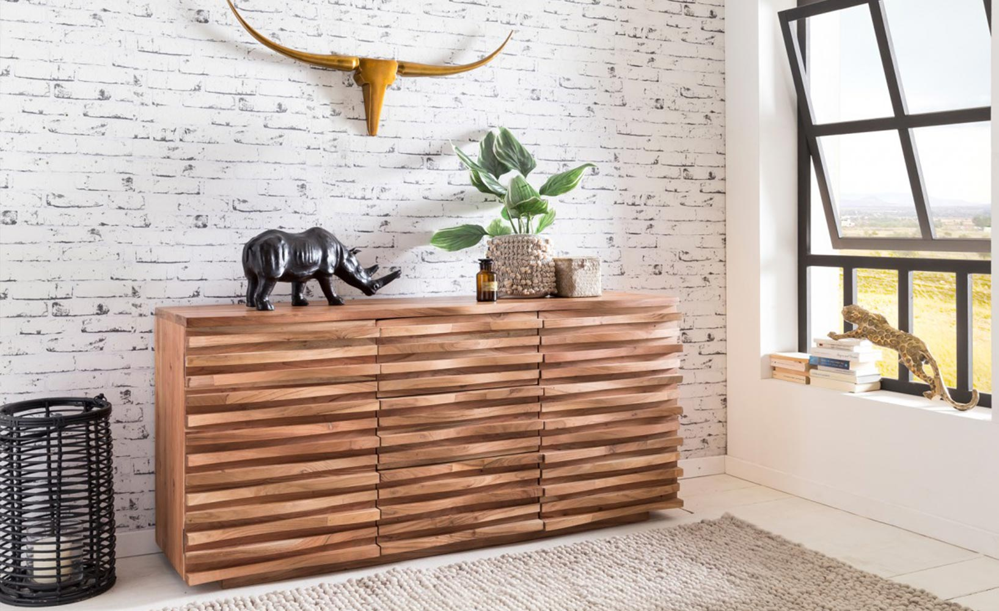

Stil
modern
Știm instinctiv când intrăm într-o locuință amenajată în stil modern. Detectăm imediat liniile simple, ordinea și prospețimea decorului, aprobăm în sinea noastră absența bibelourilor de pe etajere și spațiul liber, neocupat de piese inutile de mobilier, apoi exclamăm plăcut impresionați: Ce casă modernă! Sigur ți s-a întâmplat și ție.
Dar ce înseamnă de fapt acest modernism care înfrumusețează spațiile de locuit, cum se deosebește de alte stiluri și cum îl poți obține în propriul tău cămin? Un decor atât de aerisit și luminos, în care predomină materialele noi și designul funcțional, adaptat perioadei în care trăim, ar trebui să fie simplu de realizat. Dar este oare suficient să alegi cele mai inovatoare obiecte de mobilier și acele finisaje create datorita progreselor tehnologice ca să dai căminului tău un aspect modern?
|  |
Estetica modernismului a fost puternic influențată de situația economica din timpul celui de-al doilea război mondial și din perioada imediat următoare. Nu mai era practic să păstrezi camere fără o functie clară sau să te înconjori de obiecte inutile, dar frumoase. Țesăturile bogate, cu imprimeuri intricate și lemnul masiv sculptat au fost înlocuite cu fibre naturale și suprafețe netede, lustruite, din metal sau sticlă. Formele s-au subțiat și au devenit mai zvelte. Designul oricărui element din decor era bazat pe un ideal pur pragmatic: să salveze timp, bani și material. Aerul condiționat și încălzirea centrală au eliminat nevoia unor ferestre acoperite cu draperii groase și a podelelor îmbrăcate în covoare groase din lână. Au apărut jaluzelele și parchetul, iar elementele structurale ale clădirilor au început să fie lăsate la vedere.
●Putem recunoaște o cameră modernă după urmatoarele caracteristici: